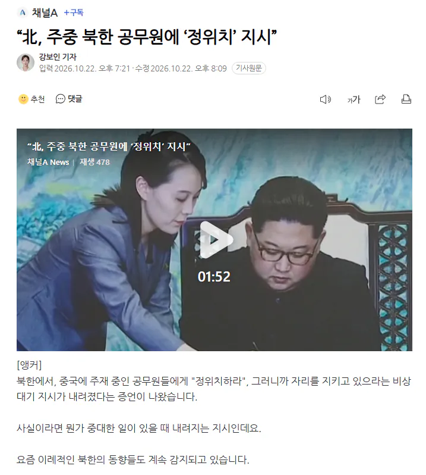
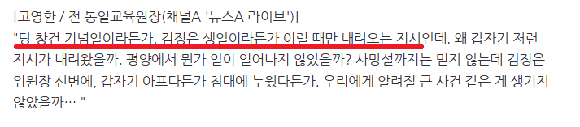

https://n.news.naver.com/article/449/0000364985?sid=100
정보) 김정일 사망때도 정위치 지시가 가장 먼저 떨어졌다고 함
중대한 일이 발생할 때만 내려오는 명령


https://n.news.naver.com/article/449/0000364985?sid=100
정보) 김정일 사망때도 정위치 지시가 가장 먼저 떨어졌다고 함
중대한 일이 발생할 때만 내려오는 명령
시즌 54561237894513 호 사망이냐?
사망까진 아닌데 뭔 일이 난건 맞는 듯
이 쯤 되면 거의 확실
김주애 후계 공식 임명 하려고 하는건가
아니면 11월에 미중 정상회담때 김정은 오는걸수도;;;;
디지진 않은거 같고 식물인간이나 반신불수같은거?


그런데 진짜 김정은 사망하면
누가 권력 잡을까..
예토전생 장성택?
두려움을 절제한 장성택 100명
걍 김주애임. 이미 후계자 노선을 걸어와서 다른 사람으로 바꾸기엔 늦었음
미성년자 아님???
그건 별로 안중요할듯
근데 중요해질 예정
ㅋㅋ
김정은
- 3살때 총을 쏘고, 9살때 3초내로 10발의 총탄을 쏴서 목표물을 다 명중시킴.
- 3살때 운전하고, 8살되기전에 비포장도로를 대형트럭으로 시속 120km로 300km를 질주함.
- 9살때 마운틴사의 초고속 보트를 시속 200km로 몰아서 외국 보트회사 시험운전사를 2번이나 이김.
- 6살때 사나운 말을 길들여서 기수보다도 더 말을 잘 몰았고, 수영, 농구, 배드민턴, 탁구 등 못하는 운동이 없음.
김정은이 '3살'때부터 한 행동들을 보면 12살인 김주애가 차기 후계자로 해도 전~혀 손색이 없음.
조만간 김주애가 3살때 뭘했고, 6살때 뭐했고, 9살때 뭐했고 이 지랄하면서 우상화하면서 후계자로 낙점하겠지ㅋㅋㅋ
이세계물인가..?
https://namu.wiki/w/백두혈통%20우상화%20교과서
여기보면 골때리는 내용 많음ㅋㅋㅋㅋ
문제는 이게 북한 교과서에 있는 내용임ㅋㅋㅋㅋ
김주애 우상화는 아직없으려나
아직까지 없음
보통 후계자 확정하고 나서 업적작하는 거라서ㅋㅋㅋ
항목중에 김정은의 '어린이 사랑'은 뭐냐 시발ㅋㅋㅋㅋㅋ 따옴표까지 해서 페도새끼같네ㅋㅋㅋ
ㅋㅋㅋㅋㅋㅋ비포장도로 대형트럭 120 ㅋㅋㅋㅋㅋㅋㅋㅋ 스프링이랑 쇼바랑 하부 작살이겠는데 ㅋㅋㅋ
김여정이 개짓거리하는거 아닌이상 김주애겠지만
김여정 관상보면 배신자관상인데...
아쌔이 정위치
주애 임신?
이정도면 뭐가 있긴 한가보네
COD MW4 발매
고위직 탈북이라도 했나.
정으니 사망까지는 아니더라도 뭔가 일이 있긴 있는 득
진짜 사망이면 일촉즉발 상황 발생할 수도 있지 않나? 비상식량이라도 좀 준비해둬야할 것 같은데
진짜 뭔일 낫나
갔냐?
과연
또호들갑일거같은데ㅋㅋ
늘 그렇듯 근들갑 예상
근들근들
대역 많아서 괜찮음
짜피 새끼돼지 앉혀놓고 김여정이 좀 휘두르다가 한 일이십년 뒤에 숙청당하겠지
요즘 여정이만 메스컴타는게 불안

이전에도 갑자기 아무말없고 북한 긴장상황이엇다가 풀릴때 보면
김정은 질병으로 수술 했다가 괜찮아졋다고 지들뉴스 쳐 나오지않았나
40대초 아닌가? 하기야 터틀맨도 37살인가에 죽었지
수술에 준하는 상황은 맞나본데
내가 주애면 고모부터 죽이고 시작함
흠 주앤지 먼지 내세우면서 내부갈등 생겼거나 정은이 디지기 직전이거나 겠네
김정은 임신!!
큰거 오나?
설마 시발;;